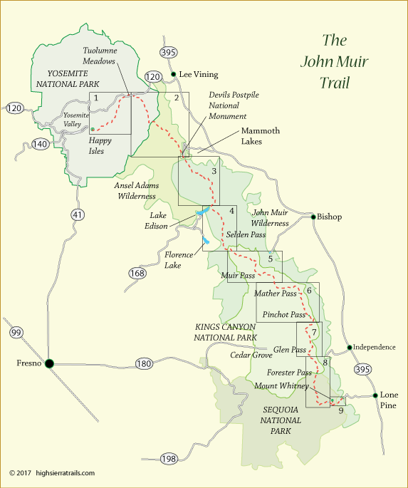

By John Friend
The John Muir Trail is a 212 mile trail from the Happy Isles trailhead in Yosemite Valley (4035') to the top of Mt. Whitney (14,505') and then to get back to civilization from the top of Mt. Whitney, you have to add onto that a 6000’ descent and 11 more miles to get down to Whitney Portal on the east side of Mt. Whitney for a total of 223 miles. Though John Muir himself didn't create the trail, it is named in his honor because he had so much to do with calling attention to the wonder of this area and to then encouraging the preservation of all this wonderful land. As an indication of the remoteness of most of the trail, you do not cross a single road on the entire trail. The total elevation gain on the trail (adding up all the up elevation) is 46,700 feet. For reference, that’s more than 10 hikes to the bottom of the Grand Canyon and back up and, of course, at much higher elevations.
The trail itself goes through Yosemite National Park, the Ansel Adams Wilderness (near Mammoth, CA), Sierra National Forest, Kings Canyon National Park, Sequoia National Park and Inyo National Forest. Much of the area is also designated the John Muir Wilderness.
There are many ways to partake of the John Muir Trail. You can hike the entire trail or you can hike sections of the trail. A number of people hike different sections each year, hoping to eventually complete all the sections.
If you're hiking the entire trail, you can do it either northbound or southbound. The hardest part of the trail is the southern half. It has the highest peaks, the worst exposure to weather, the fewest options for resupply, the fewest options for trail exit (if injured or sick) and it’s just physically more demanding. So, you really have to tradeoff facing the harder parts of the trail early in the hike when you might be fresher physically, but not as used to the altitude and perhaps not fully into the swing of daily hiking. And because of the more limited resupply options, you have to carry more days of food in the southern half (and thus more weight).
We chose the more popular direction, southbound (starting in Yosemite and going to Whitney) because you build elevation more gradually, not getting to the almost 12,000+ foot passes (Muir Pass) until day 12 when you are much more used to the altitude. If you go northbound, then you start with Mt. Whitney (14,495) and Forester (13,180) and you have to haul a heavy load of food for the upcoming days up both of them. There are some other advantages to going northbound as the sun is more likely to be at your back and there is more access to civilization (stores, resupplies, showers, laundry, etc...) in the later part of a northbound trip when you might be more likely to need something you didn't plan for.
Here’s an elevation profile of the hike to give you an idea of the passes and all the up and down:
A typical rhythm in the southern half of the trip (right half of the above profile) would be to camp at between 9000’ and 10,000’ before a pass, get an early start in the morning, try to get up to the pass by noon, take a long break at the top, then head down before any afternoon thunderstorms. Each of the low points between passes is a river (in many cases the beginnings of fairly major rivers coming out of the Sierras). You’d cross that river, turn left and start up another valley towards the next peak and then find a place to camp before the next peak. Since good camping is usually below 10,000’ (where trees a soil exist), your mileage is somewhat determined by the location of the passes and good campsites.